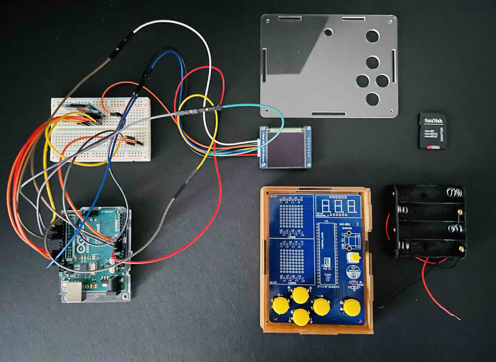
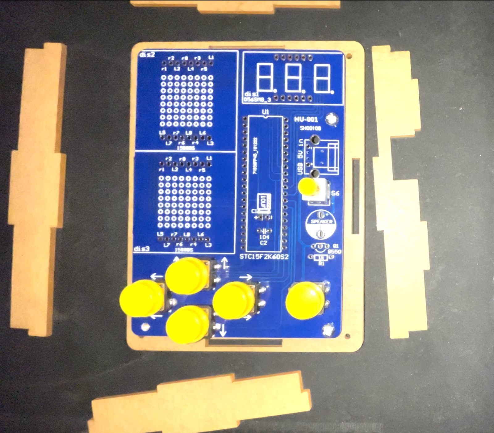

Own build · 2022
Ghost Station
A game console built on an Arduino that plays classic games from swappable cartridges, the way consoles used to. Colour display, sound, joystick controls — and a real cartridge slot, because the games are not baked into the firmware.
- MCU
- Arduino (AVR)
- Display
- 1.5" RGB OLED module
- Storage
- microSD over SPI
- Bootloader
- avr_boot, burned via ISP
- Language
- C++
The cartridge trick
A normal Arduino sketch is the firmware: to change the game you reflash the board from a PC. Ghost Station moves that step onto the console itself. The stock bootloader is replaced with avr_boot, which can read a compiled binary off an SD card and write it into flash on its own.
So a cartridge is just a microSD card holding one file. Build the game in the Arduino editor,
rename the resulting .hex to FIRMWARE.BIN, drop it on the card. Push
the card in, restart, and the console flashes itself and boots the new game.
SD card (cartridge) Console
------------------- -----------------------------------
FIRMWARE.BIN --► avr_boot reads it over SPI
|
v
writes it into flash
|
v
intro plays, game boots
Getting there needs an ISP programmer and a second Arduino to burn the bootloader in the first place — a one-time step, but the one that makes everything after it possible.
The intro
Switching games plays an intro animation first, in the spirit of the PlayStation 2 boot sequence. It is pure theatre and it is the detail that makes the thing feel like a console rather than a dev board with buttons soldered on.
Where it stands
Working: the cartridge system, the intro, and a handful of games. Still open: more games, polishing the existing ones, and reworking the hardware case — the version in the photos is a bare board with arcade buttons, which works but is not the enclosure it deserves.


